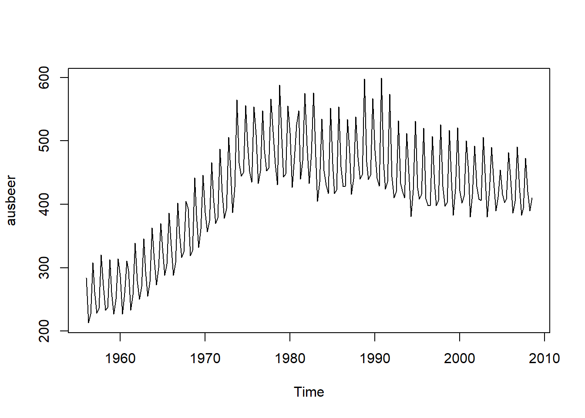
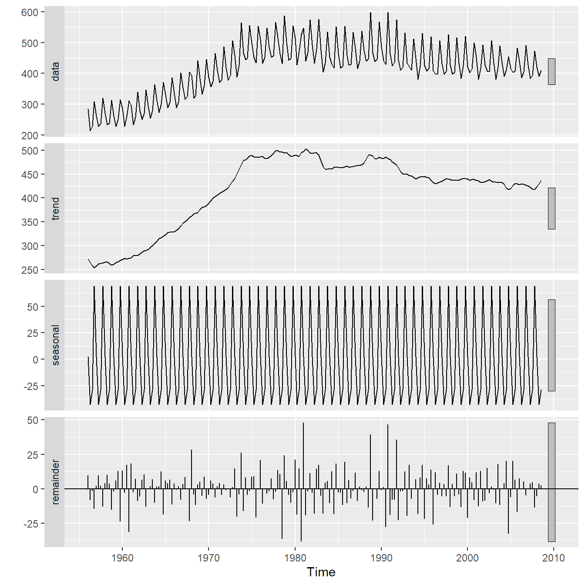
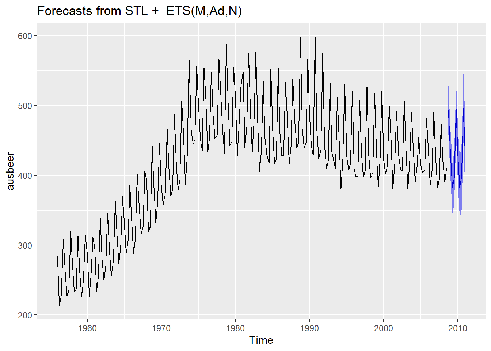

2 Trend og sesong
2.1 Kontrollspørsmål
- Hvilke tre komponenter kan en tidsrekke typisk bestå av?
2.2 R-øving
1. Data. I pakken fpp finnes en tidsrekke som heter ausbeer, som er den kvartalsvise produksjonen av øl i Australia fra 1956 til 2008. Du kan få tak i det og se på tidsrekken ved å kjøre følgende kommandoer:

Vi ser at det er en klar trendkomponent, selv om den ikke er lineær, samt en årlig sesongvariasjon.
2. Dekomponering. Funksjonen stl dekomponerer tidsrekken i de tre komponentene: trend, sesong, og tilfeldig variasjon. For å få tilgang på denne funskjonen trenger vi pakken forecast:
Vi så kan kjøre funksjonen slik:
Vi kan hente ut de ulike komponentene ved å bruke dollartegnet: dekomponert$time.series. Pakken forecast har en egen plottefunksjon, autoplot som er spesialdesignet for tidsrekkeobjekter. Prøv å plotte de tre komponentene hver for seg ved å kjøre:

3. Predikere. For predikering bruker vi funksjonen forecast(), som tar en estimert modell som input, og som bruker modellen til å skrive frem tidsrekken ved å estimere fremtidige verdier. Dekomponeringen over utgjør også en modell som vi kan bruke til å predikere fremtidige observasjoner med.
Kodesnutten under viser hvordan man predikerer \(10\) tidssteg frem i tid ved å sette h = 10 i funksjonen. I tillegg kan funksjonen regne ut prediksjonsintervall med en gitt dekningsgrad, her velger vi level = 0.95 for \(95\%\) prediksjonsintervall. Resultatet lagrer vi i objektet prediksjon. Dette objektet kan vi plotte ved bruk av autoplot-funksjonen:
